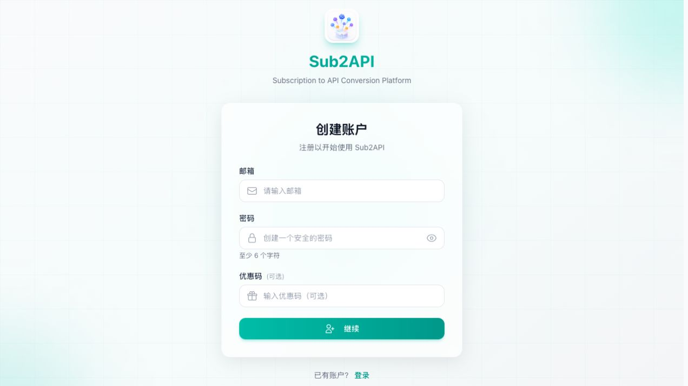

新手图文教程
不用填写 API Key，几分钟创建可用的 Codex Profile。
订阅服务会把注册、套餐购买和设备授权连成一条流程。完成后，接口地址、模型和访问凭据会自动写入当前 Profile，无需手动配置。
- 已安装最新版 Codex / ChatGPT 桌面 App。
- Codex 多开助手已更新到包含“订阅服务”的版本。
- 已有账号通常不到 1 分钟；新用户一般需要 2–5 分钟。
1. 创建新配置
点击左侧配置列表旁的 +，填写容易识别的名称。建议保持“沿用当前 Codex 设置”开启；是否同步已有对话可按需要选择。

2. 选择“订阅服务”并前往授权
在“使用方式”中选择 订阅服务。此模式不需要填写 Base URL、模型或 API Key。


3. 注册或登录
第一次使用时填写邮箱和密码，并完成邮件验证码校验。注册成功后会自动进入当前授权对应的套餐页面，不需要返回 Dashboard 再找入口。

4. 选择套餐并完成支付
根据使用强度选择套餐，价格、日/周/月额度和有效期以购买页实时显示为准。目前可用支付方式：
- 支付宝：人民币结算。
- 微信支付：人民币结算。
- 国际银行卡：美元结算，支持支付页实际显示的银行卡和 Link。
5. 回到 App，生成并打开
支付和授权完成后，Codex 多开助手会自动恢复到前台。看到“授权已完成”后继续向导并点击“生成”，随后在左侧选择新 Profile 并点击“打开”。

常见问题
已付款，但页面一直显示处理中
先等待 1–2 分钟，不要重复付款。系统同时使用支付回调和主动查单恢复订单；超过 5 分钟仍未完成，请将注册邮箱、订单号和支付时间发送到 jqy.tieniu@gmail.com。
支付成功后没有自动回到 App
切回 Codex 多开助手查看是否已显示“授权已完成”。如果仍在等待，回到原授权页刷新一次；会话过期则在 App 重新发起，已经生效的订阅不会要求再次付款。
提示额度不足或请求过快
额度不足表示日、周或月额度之一已经用完；请求过快通常表示达到 RPM 限制。RPM 是每分钟请求次数，不等于同时打开窗口的数量。
更换电脑后还能继续用吗
可以。在新设备使用相同账号重新授权即可。每台设备会获得独立凭据，但共同受账号当前订阅额度约束；旧设备可在服务中心的 API 密钥页面按设备密钥名称停用。
安全与隐私
- 桌面端不会获得管理员凭据、上游主 Key 或支付密钥。
- 设备凭据通过一次性授权兑换并加密保存在本机，不写入启动脚本和诊断信息。
- 支付由对应支付平台处理，Codex 多开助手不保存银行卡、支付宝或微信支付资料。
- 订阅到期、退款或设备授权被撤销后，对应 Profile 将不能继续请求服务。
技术问题请前往 GitHub Issues。支付、退款或包含个人资料的问题请发送到 jqy.tieniu@gmail.com，不要在公开 Issue 中附订单号或付款凭证。